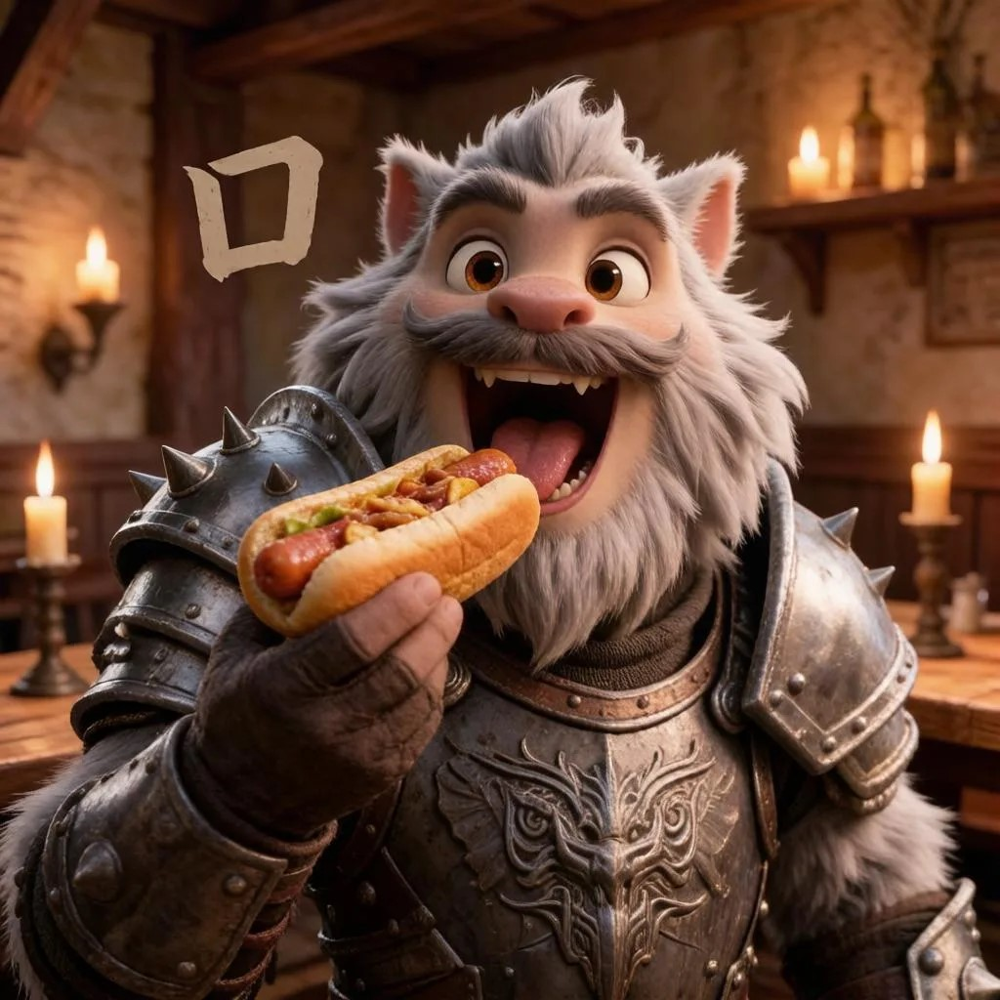
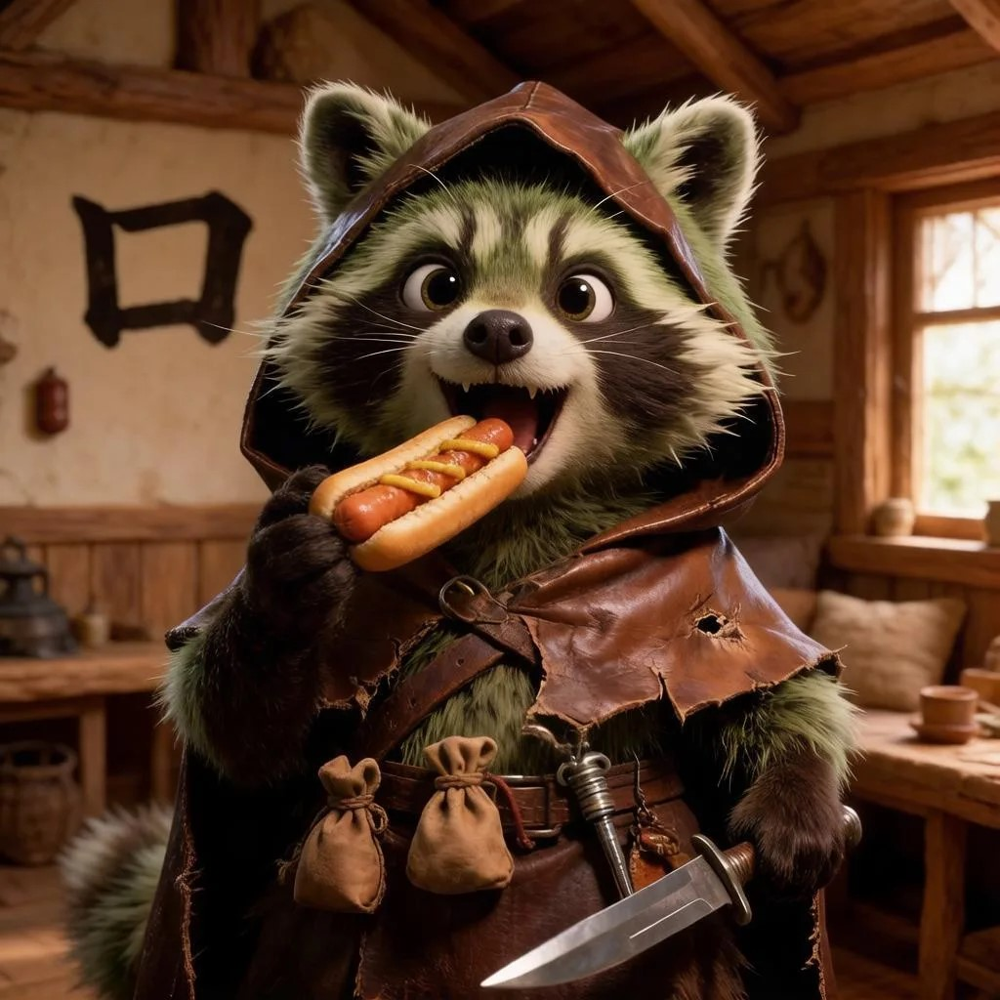

Жаберт
Жаберт
Ква-а! Приветствую на моём болоте, путник. Я Жаберт — лягушка-флейтист. Сверчки уже настроили инструменты, начнём! 🎶
Смотри на иероглиф 口. На что он похож? Конечно — на широко открытый РОТ! Когда мы едим хот-дог, мы открываем рот вот так: 口!
👄 Смотри: 口 — это же открытый рот! Сверчок подсказывает: «пропой kǒu, как я!» 🦗
Нажми на рот — он откроется, как 口, и ты услышишь kǒu!

Рот открыт — почти 口! · нажми, чтобы рассмотреть 🔍

Хот-дог требует широкого 口! · нажми 🔍